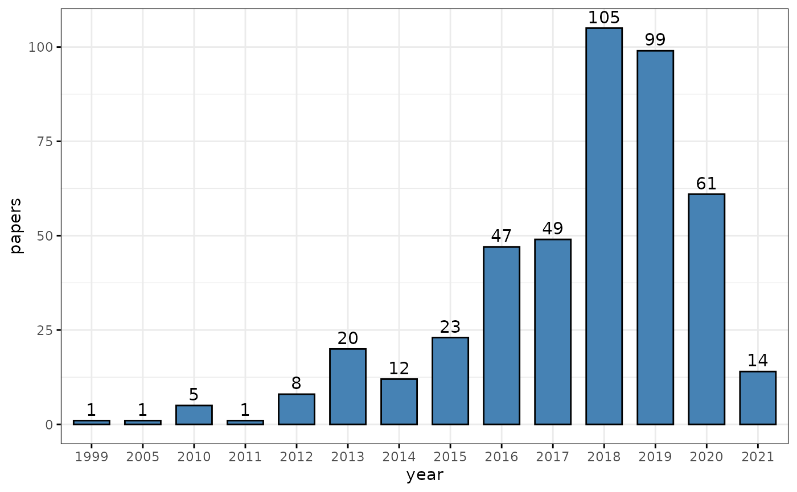
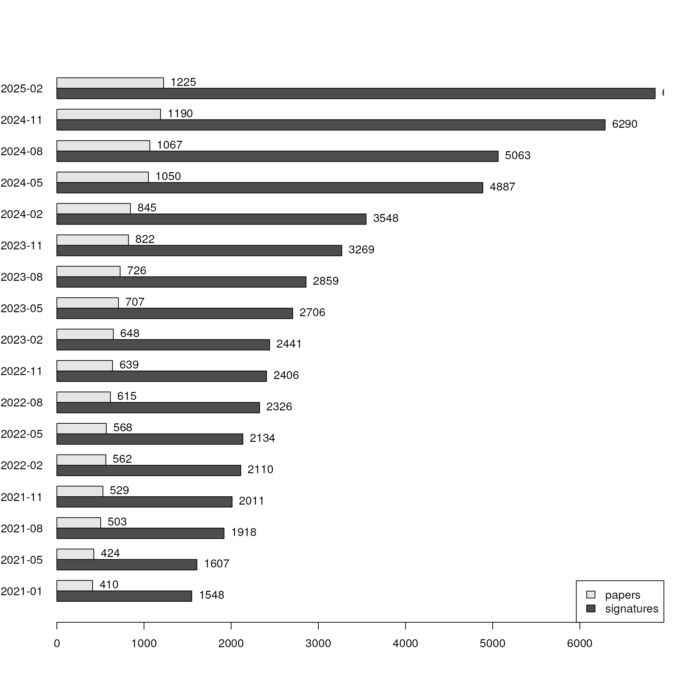
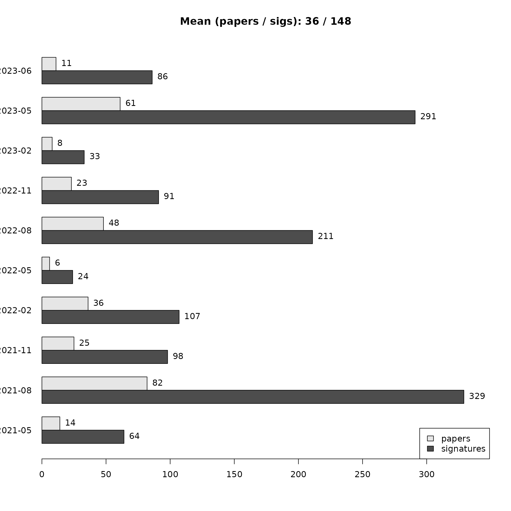
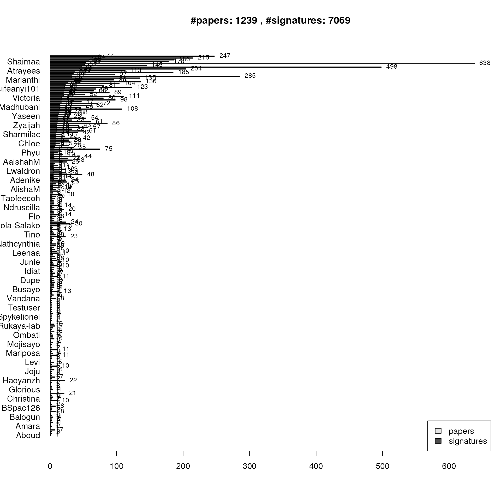
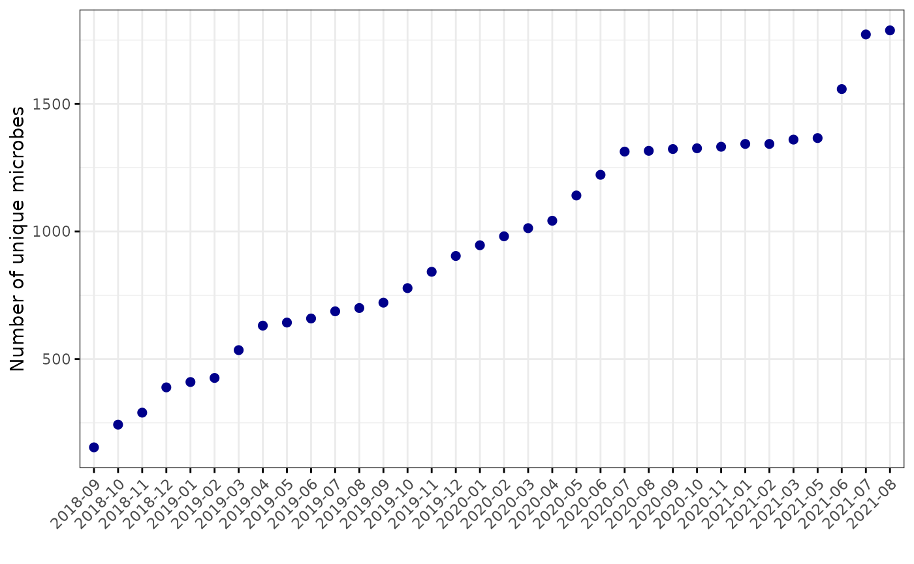
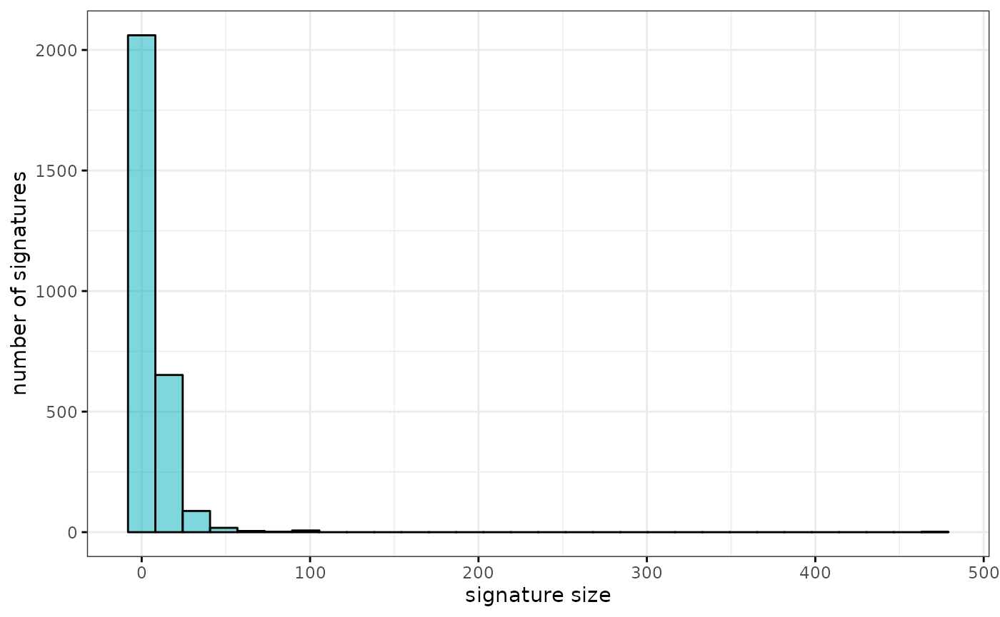

Get bulk export from bugsigdb.org:
full.dat <- bugsigdbr::importBugSigDB()## Using cached version from 2021-10-05 05:07:38
dim(full.dat)## [1] 2050 48
colnames(full.dat)## [1] "Study" "Study design"
## [3] "PMID" "DOI"
## [5] "URL" "Authors"
## [7] "Title" "Journal"
## [9] "Year" "Experiment"
## [11] "Location of subjects" "Host species"
## [13] "Body site" "UBERON ID"
## [15] "Condition" "EFO ID"
## [17] "Group 0 name" "Group 1 name"
## [19] "Group 1 definition" "Group 0 sample size"
## [21] "Group 1 sample size" "Antibiotics exclusion"
## [23] "Sequencing type" "16S variable region"
## [25] "Sequencing platform" "Statistical test"
## [27] "Significance threshold" "MHT correction"
## [29] "LDA Score above" "Matched on"
## [31] "Confounders controlled for" "Pielou"
## [33] "Shannon" "Chao1"
## [35] "Simpson" "Inverse Simpson"
## [37] "Richness" "Signature page name"
## [39] "Source" "Curated date"
## [41] "Curator" "Revision editor"
## [43] "Description" "Abundance in Group 1"
## [45] "MetaPhlAn taxon names" "NCBI Taxonomy IDs"
## [47] "State" "Reviewer"Stripping illformed entries:
Number of papers and signatures curated:
## [1] 504
nrow(full.dat)## [1] 2050Publication date of the curated papers:
pmids <- pmids[!is.na(pmids)]
pubyear1 <- pmid2pubyear(pmids[1:361])
pubyear2 <- pmid2pubyear(pmids[362:length(pmids)])
pubyear <- c(pubyear1, pubyear2)
head(cbind(pmids, pubyear))## pmids pubyear
## [1,] "28038683" "2016"
## [2,] "28173873" "2017"
## [3,] "27015276" "2016"
## [4,] "27625705" "2016"
## [5,] "23071781" "2012"
## [6,] "28467925" "2017"
tab <- table(pubyear)
tab <- tab[-length(tab)]
tab <- tab[order(as.integer(names(tab)))]
df <- data.frame(year = names(tab), papers = as.integer(tab))
ggbarplot(df, x = "year", y = "papers",
label = TRUE, fill = "steelblue",
ggtheme = theme_bw())
Stripping empty signatures:
ind1 <- lengths(full.dat[["MetaPhlAn taxon names"]]) > 0
ind2 <- lengths(full.dat[["NCBI Taxonomy IDs"]]) > 0
dat <- full.dat[ind1 & ind2,]
nrow(dat)## [1] 2050Papers containing only empty UP and DOWN signatures (under curation?):
## numeric(0)Progress over time:
dat[,"Curated date"] <- as.character(lubridate::dmy(dat[,"Curated date"]))
plotProgressOverTime(dat)
plotProgressOverTime(dat, diff = TRUE)
Stratified by curator:
npc <- stratifyByCurator(dat)
plotCuratorStats(dat, npc)
Number of complete and revised signatures:
table(df[["State"]])## < table of extent 0 >
table(dat[,"Revision editor"])##
## Chloe
## 1
## Claregrieve1
## 126
## Claregrieve1,Chloe
## 1
## Claregrieve1,Chloe,WikiWorks743
## 1
## Claregrieve1,Fatima
## 3
## Claregrieve1,Lwaldron
## 1
## Cynthia Anderson
## 21
## Fatima
## 3
## Fatima,Claregrieve1
## 2
## Fcuevas3
## 15
## Gina
## 9
## Itslanapark
## 21
## Kwekuamoo
## 37
## Lorakasselman
## 2
## Lwaldron
## 7
## Madhubani Dey
## 44
## Madhubani Dey,Fatima
## 2
## Madhubani Dey,Lwaldron
## 1
## Manuela
## 11
## Mmarin
## 8
## Samara.Khan
## 47
## Tislam
## 9
## Tislam,Fatima
## 6
## Titas
## 8
## Titas,Lwaldron
## 1
## Valentina
## 2
## WikiWorks743
## 1551
## WikiWorks743,Cynthia Anderson,LGeistlinger
## 2
## WikiWorks743,Cynthia Anderson,Lwaldron
## 1
## WikiWorks743,Fatima
## 49
## WikiWorks743,Fatima,Kwekuamoo
## 2
## WikiWorks743,Fatima,Lwaldron
## 3
## WikiWorks743,Kwekuamoo
## 1
## WikiWorks743,Lwaldron
## 34
## WikiWorks743,Lwaldron,Fatima
## 1
## WikiWorks743,Rimsha,Fatima
## 1
## WikiWorks743,Rimsha,Fatima,LGeistlinger
## 1
## WikiWorks743,WikiWorks753
## 1
## WikiWorks743,WikiWorks753,WikiWorks
## 1
## Yu Wang,Fatima
## 6
sigs <- bugsigdbr::getSignatures(dat, tax.id.type = "metaphlan")Number unique microbes contained in the signatures:
## [1] 1811Development of unique microbes captured over time:

## Min. 1st Qu. Median Mean 3rd Qu. Max.
## 1.000 2.000 4.000 6.831 9.000 100.000
gghistogram(lengths(sigs), bins = 30, ylab = "number of signatures",
xlab = "signature size", fill = "#00AFBB", ggtheme = theme_bw())
## [1] 927The calcPairwiseOverlaps function works quickly on all of bugsigdb currently, but makeDist is slow and surely could be improved for efficiency. For now, use only nasal samples:
dat_subset <- subset(dat, `Body site` == "nasal cavity")
sigs_subset <- bugsigdbr::getSignatures(dat_subset)
paircomp <- calcPairwiseOverlaps(sigs_subset)
jdist <- makeDist(paircomp, "jaccard")Create a dendrogram of Jaccard dissimilarities (1.0 has no overlap, 0.0 are identical signatures).